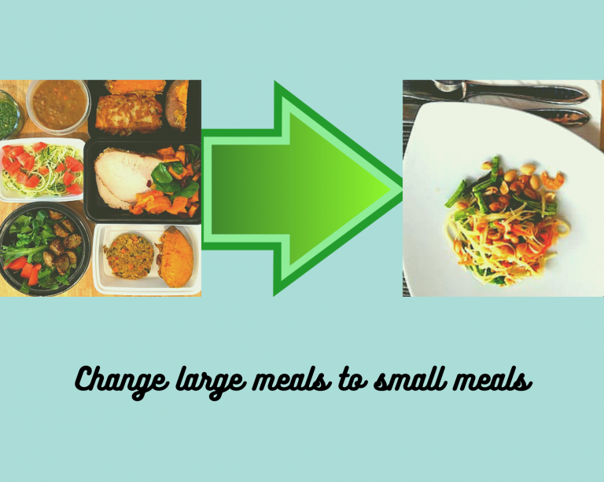
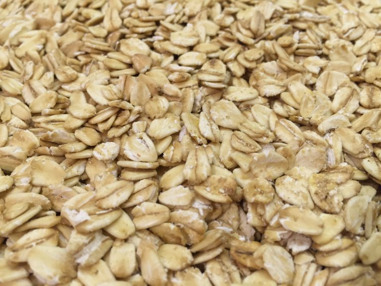
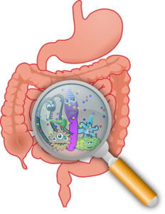

Your digestive health depends greatly on the foods you eat and the meal patterns you adopt. Sometimes, personal stress can play a part as well. The common digestive distress problems can include constipation, gas, bloating, indigestion, diarrhea, abdominal pain, etc. Whatever the case may be, you are not alone. According to the CDC, 22.4 million US people have had a primary digestive disease diagnosis in 2016. This number doesn’t include people who had only mild to moderate gastrointestinal (GI) discomfort and did not seek for medical attention. Instead, they may turn to holistic therapy or over-the-counter drug therapy as an alternative. What is the nutrition for gastrointestinal health?
GI Imbalance Signs
It really hurts...
Your bowel pattern may be the first indicator of the wellness situation of your GI system. Do you have hard, normally, loose, or runny stool? How often does your bowel move? What color is your stool? These all convey a message of how well your GI system functions. Before progressing to a more severe stage of GI disease, our GI system sends warning signs of GI disturbance. We usually can sense the GI change, but we tend to ignore it. If we can catch every GI sign early and take corrective action immediately, we could greatly reduce the chance of developing digestive diseases. Our GI system is lined with lots of immune cells, so maintaining a healthy GI can also improve our immunity. Common GI diseases are such as gastroesophageal reflux disease (GERD), ulcerative gastrointestinal disease, irritable bowel syndrome, Crohn’s disease, celiac disease, diverticulosis, GI cancer, etc. It is also ideal to perform endoscopy and colonoscopy every five years for early cancer detection, especially if you are at the age of 50 years or older.
Smaller But More Frequent Meals for GERD

Over 70% of the older population have heartburn problems. The gastroesophageal sphincter becomes loose overtime, which may be a part of aging. Don’t bulge eat often, as you will stretch your digestive system too much, which may gradually lead to lose its functionality and stop working. For optimal digestion, reducing the amount of meal portion size and increasing the frequency of meal times (3 smaller meals and 2 snacks a day) can help alleviate the symptoms related to heartburn. Never lie down right after meals; you should wait at least one hour after meals. Certain foods may also aggravate the burning sensation. Avoid foods such as peppermint, tomatoes, high fatty foods, coffee, spicy foods, citrus fruits, chocolate, alcohol, etc. If you feed your stomach with the right amount of food at the right times everyday, your digestive system will work effectively.
Soluble and Insoluble Fiber Foods

Fiber consists of soluble fiber and insoluble fiber, both of which are excreted from the body undigested. They perform different functions in your GI system. Soluble fiber dissolves in water and becomes viscous and bulky. People who want to lose weight can add more soluble fiber to their diet, since it triggers early satiety, which prevents you from eating large meals. Soluble fiber binds with cholesterol and is excreted from your GI system, and helps lower your cholesterol level. It also delays glucose from being released into your bloodstream, so blood sugar doesn’t spike too high after meals. Insoluble fiber on the other hand forms bulk in your colon and is excreted with all waste products out of your body. It helps prevent constipation and moves your bowel faster. However, when you consume a lot of fiber with meals, also remember to take an adequate amount of water with it, as fiber increases the need for water. Good fiber food sources are vegetables, fruits, beans, legumes, whole grains, etc. To be more specific, eat more oats, brown rice, apples, pears, oranges, bananas, beans, avocado, broccoli, bell peppers, spinach, tomatoes, etc. Try to fill your plate with colorful and fiber-rich foods. Another helpful tip is to try to gradually increase your fiber level, otherwise, symptoms like gas and bloating can occur if a large amount of fiber is added to your diet suddenly.
Probiotics and Irritable Bowel Syndrome

"Wow, this is such a great place to hang out!"
A large population worldwide is affected by irritable bowel syndrome (IBS), which is a common disorder affecting the large intestine for reasons that are unknown. It has bothersome symptoms including gas, bloating, abdominal pain, diarrhea, constipation, etc. IBS symptoms may be associated with certain types of foods, stress, nervous system, infection, bacteria change in the gut, hormone changes, family history, etc. The types of foods may include but not limited to wheat, milk, citrus fruits, cabbage, carbonated drinks, etc. Because IBS has no known causes, it also does not have a cure. Probiotic therapy can be a great alternative. Researchers have approved probiotic therapy to be safe and effective on improving IBS symptoms. Probiotics are the good live bacteria that benefit your gut health. They assist in breaking down nutrients for better absorption, and some of these actually make nutrients such as biotin, vitamin K, pantothenic acid, etc. The colony of the good bacteria can also inhibit the overgrowth of pathogenic bacteria, which may be associated with the IBS symptoms. To achieve the best results, the types of bacteria strains, dosage, and probiotics’ pill coating all can impact the effectiveness of probiotic therapy. The low FODMAP diet has been recently researched to be beneficial in relieving IBS syndromes. The low FODMAP diet refers to foods low in fermentable Oligo-saccharide, Di-saccharides, Mono-saccharides, and Polyols. Try to limit these high FODMAP foods include banana, beans, garlic, onions, asparagus, cauliflower, avocado, apple, honey, peas, cabbages, cashews, barley, muffin, etc. Each person may have a different sensitivity to the same type of food. I recommend to keep a diary of your food intake, so you will discover exactly which food causes troubles to you and avoid it altogether the next time. As all of these foods are high in nutrients that our body needs, it is inadvisable to get rid of all of these high FODMAP foods. (To be Continued … …)